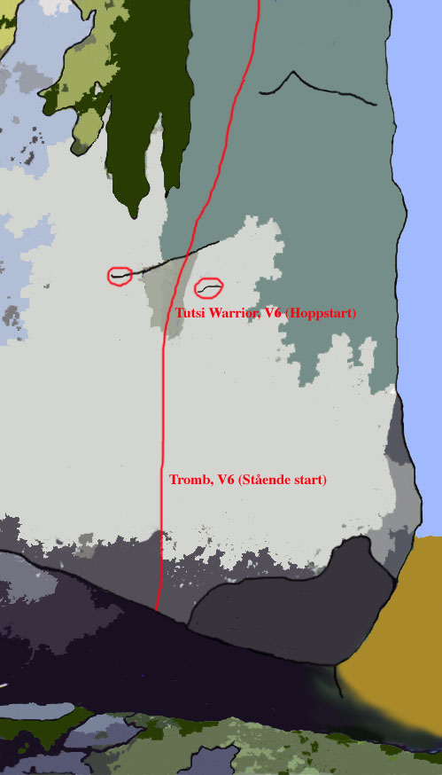
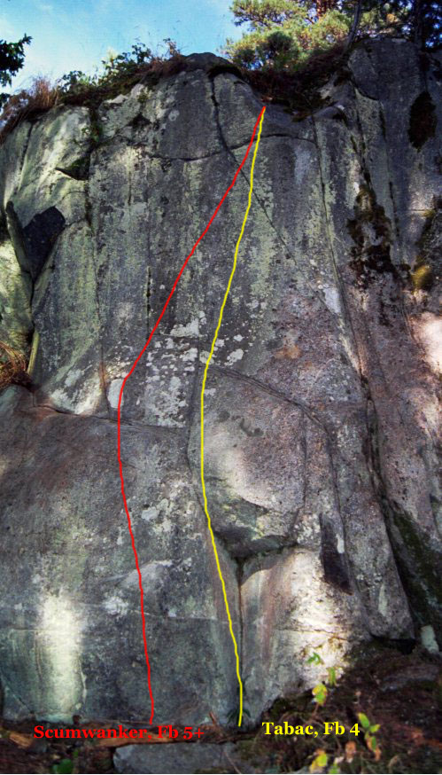

Brudberget
GPS: 59.24664074974653,18.54912757873535
Allmänt
Området är beläget på Ingarö ett par mil öster om Stockholm. Tro för den skull inte att det handlar om bouldering på en sandstrand med havet i fonden. Det hade säkert stämt in om du hade åkt hit lite tidigare...för ett par tusen år sedan eller så.
Istället ligger området mitt inne i skogen. Det blir trots detta inte särskilt mörkt och skuggigt eftersom träden växer ganska glest framför klippartierna.
Området började utvecklas sommaren 1997 och då framförallt av
DD
,
Stefan Pettersson
,
Michael Meyer
och
Tomas Gustavsson
. Det är inte på något sätt färdigutvecklat.
Området domineras av en relativt låg klippvägg, en gammal förkastningsbrant. Boulderproblemen finns dels på denna brant, i flera etage, dels på ett antal klippblock. Bergarten är granit. Klippan är till stora delar is- och vattenslipad, vilket ger den dess speciella karaktär. Landningarna är oftast utmärkta, även om exempel på det motsatta finns. Ta gärna med dig en stålborste eftersom vissa problem har en tendens att mossa till sig extremt snabbt.
En sak att tänka på är att många av problemen ligger i skuggan i skogen och det är ofta blött.
Vägbeskrivning
Tag väg 222 mot Gustavsberg. Efter ca 20km (från Slussen) sväng av mot Ingarö. Följ Ingarövägen genom Brunn. Ca 4 km efter Brunn tag vänster mot Eknäs. Ytterligare 4km senare, tag vänster mot Östernäs vid hållplats Skälsmara. Därefter tag höger in på Brudbergsvägen och åk den till den tar slut, när du ser vändplanen är du framme.
OBS!
Parkera inte på vändplanen! Fortsätt ytterligare 20m in i skogen och parkera till vänster. Ej heller på skogsvägen till höger.
Gå stora stigen till vänster längst med den röda sommarstugan. Följ kraftledningarna ett par hundra meter och blocken dyker upp på vänster sida.
Buss: Tag buss 430 från Slussen till Skälsmara (50-55 min). Gå ca 1,3 km (ca 30 min till sektor 1).
Gamla
Stockholmsföraren
nämner två rep-leder:
-
- Assassinated beauty
- 7+/8-
- En bult
Access
Saxat från
:
Förare
Översikt

Sektor 1
-
- Princesa de mierda
- 4-
- Kort travers som dock är intressant i början. Startar en liten bit till vänster om Batman i den lilla sprickan. Traversera bort till den låga hyllan. Fötterna är kruxet i mitten.
Sektor 2
-
- Tamilska tigrarna
- 6b+
- Den höga areten längs till vänster på sektorn. till toppen.
- Gul
- Diss'n that
- 3
- Stora grepp och steg, nära besläktat med fjällvandring. Ta de stora greppen, stå på de stora stegen och följ sprickan till toppen.
- Gul
- V2 crack
- 4+
- Ett sprickproblem, inte hårt, möjligen lite tekniskt. Starta med båda händerna i nischens nederkant. Tag med h. hand i spricka. Se till att du får handen på en liten list inne sprickan. Jamma eller laybacka upp.
- Röd
- Facelift
- 4+
- Väggklättring på listerna, lättare än det ser ut. Sprickan får INTE användas.
Sektor 2a
-
- Inälvan
- 4
- Mantlingsproblem. Kör inte med bar överkropp... Den lilla stenen vid trädet. Startar längst inne med en sträckning upp till den raka toppen. Gå ut till hörnet och häv dig upp och mantla upp på toppen.
Sektor 2b
(Blocken mellan sektor 2a och sektor 9)
-
- Buffalo Springfield
- 3
- Hangeltravers över tre block från V till H och mantling upp på sista blocket.
Sektor 3
- Gul
- Boulder für alle
- 3
- Sköna grepp, funkar som uppvärmning. Starta längst t.v på blocket och traversera tills du nått bortre hörnet (runt första hörnet alltså). Behöver du mer beta än så kan du åka hem nu...
- Röd
- Sötnos
- 6b
- Sittstart uppför kanten/areten till höger.
- Grön
- Bagghawaghita
- 7a
- Tunnt för fötterna i början, intressant startposition. Startar där "Boulder für alle" slutar. HH på jugge på kanten (kan använda tummen), VH på "toppiga" listen. Hokka med v.fot runt det bortre hörnet och få på så sätt en horisontell startposition. Hoppa upp med h.fot på det lilla fotsteget nedanför händerna. Skicka upp till den bra sidgreppssprickan upp till vänster. Gå runt kanten till starten på "Boulder für alle" utan att använda toppen.
-
- Brown fat cheese machine
- 6c/6c+
- Balansigt och känsligt. Inte direkt någon powerboulder. Går på baksidan av blocket. Starta med VH runt kanten (där "Boulder für alle" slutar) och HH upp i slopigt undercling. Kliv upp och traversera ända till juggen längst bort på blocket. Kanten på toppen får naturligtvis ej användas. Finns några sidlister att använda på mitten, några slopers i början...
-
- Fat brown cheese machine
- 6b+
- Balansigt och känsligt. Inte direkt någon powerboulder. Reversvarianten av "Brown fat...". Startar i slutjuggen i densamma borta vi svakanten på blocket. Slutar med handen runt kanten där "Borwn fat..." startar. Kanten på toppen får naturligtvis ej användas.
Sektor 4

-
- Tutsi Warrior
- 7a+
- Något för basketspelare? Fixera de två crimplisterna drygt 3 meter upp. Hoppa upp och plocka dem. Dra dig upp och placera höger fot på en mikrolist. Dyna/sträck dig till juggen snett upp till höger. Ta tag i kanten och mantla över. OBS! Om du startar stående istället för "flygande" är det "Tromb" du gör.
-
- Tromb
- 7b
- Fint problem med bra landning. Startar med bägge händerna på den bra listen mitt på väggen. Sätt upp h.fot på det tydliga steget precis under kanten, v.fot på smear/knopp till vänster under kanten. Fronta upp till nästa stora list med HH (alt. gå via den lilla listen med VH). Vidare upp som Tutsi warrior.
-
- Code red
- 7c+/8a
- Rent och vackert problem med bra landning. Starta med VH i gastongrepp under kanten, HH i sidepull/undercling under kanten till höger (baken måste inte vara i backen). Sätt upp h.fot på tydligt steg precis under kanten till höger, v.fot på smear steg rakt ner. Tweaka med höger ben, lås in på VH och sträck HH upp till listen där Tromb börjar. Matcha och fortsätt upp som Tromb.
-
- Core
- 7b
- Hård catch från sittande start. Längst till höger på "Tutsiväggen". VH i platt undercling längst nere, HH på pinchgreppet på arreten. Lätta och catcha upp med VH till det bra greppet rakt upp...långt upp.
-
- Highscore
- 6c+
- Ett par hårda move. Samma startgrepp som "Core", men istället för att skicka direkt upp till slutgreppet med HH flyttar du istället VH till sidepullisten och skickar därefter till slutjuggen med HH. Det handlar alltså om en ickeelimineringsvariant av "Core", eller om det är "Core" som är en elimineringsvariant av "Highscore"... Vem bryr sig?
Sektor4a
-
- Ze balance
- 6a
- Rolig travers på sköna grepp. Svårare än det ser ut. Startar med bägge händerna i hörnet, en hand på var sida, och traverserar det långa svaeet. Slutar på det bra greppet en bit upp längst bort på väggen. Första moven är en catch till det bra sidgreppet inne på svaväggen. Två krux, först att komma till det bra greppet ovanpå sloperlimpan sedan att matcha i det bra sidgreppet innan man tar slutgreppet på kanten.
-
- Ecnalab ez
- 6a
- Rolig travers på sköna grepp. Svårare än det ser ut. Reverserar "Ze balance". Startar i slutjuggen högt upp på kanten och slutar med bägge händerna i startgreppen på "Ze balance".
-
- Lederhosen light
- 6a
- Kul men kort catch. Sittstart till Ze balance. Starta med VH på böjd list inne på "tutsi" väggen, HH på arreten i lite slopigt grepp där du kan pinsha med tummen. H.fot på tydligt steg rakt ner under kanten, catcha upp till startgreppet i "Ze balance" med HH. Koppla ihop "Lederhosen" med "Ze balance" och du får kanske en Fb6b...
Sektor 5
- Röd
- Slap that fat bitch
- 7c+
- Följ sprickan ända nerifrån hela vägen till kanten längst uppe.
-
- Street fame
- 8a
- Sittstart mitt emot starten på Slap...
Sektor 6
- Gul
- Recreation for the masses
- 6b
- Travers med perfekt landning. Start längst till v. med händerna på greppen ovanpå den lilla "triangeln". H. fot på smear v. fot i luften som balans. Skicka högeranden långt bort till h. och nedåt till den positiva fickan. Matcha och ta enfingerhålet strax ovanför till h. med höger hand. Korsa bort till hyllan/slopern och matcha igen. Sträck dig bort och tag greppet i slutet av tvärsprickan.
-
- Recreation for the middleclass
- 6b
- Travers med perfekt landning. Sittstart (samma som "Sittstart Almost..."). Starta under kanten, VH i undercling inne på väggen, HH i undercling under kanten. Res dig upp (ganska tungt) och sträck upp HH till det bra greppet rakt upp. Reversera sedan "Recreaton for the masses" och avsluta med bägge händerna i dess startposition.
-
- Recreation for the upperclass
- 6b
- Travers med perfekt landning. Startar hängande i jammet i sprickan till höger. Campusmove in till greppen till vänster, sedan reversering av "Recreation for the masses" ända till startgreppen.
- Röd
- Almost nearly there
- 5+
- Högt, läskigt och tunnt för fötterna. Klättra upp längs sprickan ända till toppen. Krux i slutet... Tillåtet att använda trädet för att rädda sig och komma ner. Kan även göras med sittstart (samma som "Recreation for the middleclass"), då Fb6b
-
- Aussieboys
- 6c+
- Snygg arete. Kräver bra spot. Sträck dig upp till grepp på areten, klättra upp till toppen.
-
- Super cool
- 7c/c+
- Super coolt problem på hyffsade grepp. Ta med många krashpads. Börjar längst in där taket börjar (samma sittstart som "Recreation for the middleclass"). Skicka ut HH till jammet i sprickan till höger, Matcha med VH och flytta ned HH till det slopiga greppet där sprickan slutar (slutgreppet på "Recreation for the masses"). Placera fötterna (toehooka) och skicka ut HH runt areten. Avsluta med att klättra upp areten (Aussie boys). "You can't find a problem better than this one in Fontainbleau"
Sektor 7

Sektor 8
-
- Smurf
- 6a
- Extremt lågt problem, Konstigt. (otroligt mycket svårare om man är lång)
Sektor 9a
Sektor 9b
-
- Opium
- 6b+
- Sittstart med händerna i den lilla nischen. Ta grepp runt kanten på areten, kliv upp och catcha till hornet på kanten.
-
- Macho man
- 7c+
- Lång catch med ruskig landning. Kan endast göras med topprep som livförsäkring.
Sektor 10
-
- Sittstart Assassinated... vänstra sprickan
- ?
-
-
- Sittstart Assassinated... högra sprickan
- ?
-
-
- Sandman
- 7b
- Start bakom trädet, lätt trv. till höger sedan up...topout..lite läskig
-
- Opium top out
- 6c
- Precis vad namnet säger, avigt utsteg - ta det försiktigt
Sektor 11
- Röd
- Cry in vain for mercy
- ?
-
Sektor 12
Sektor 13
- Röd
- And God pulled the trigger
- 6c+
- Teknisk, tung och mycket fin. Starta sittande på marken. H. hand på incutlist v. hand i layback runt den kanten. Vrid in h.ben under dig och skicka lång upp i den vertikala sprickan till ett grepp du kan ta i omvänd sidepull (gastonliknande) med h.hand. Res dig upp på h.fot och tag greppet längre upp i samma spricka med v. hand, även detta i omvänd sidepull. Glöm inte att använda tummen. Kliv upp snett till höger med h. fot, tryck till med v. fot och skicka upp h. hand till bra grepp ganska långt upp till h. Ta tvärsprickan - hemma. Problemet kan lösas på flera olika sätt beroende på längd.
-
- Rehabhypnol
- ?
- Teknisk och mycket tung. Startar med bägge händerna på den lilla hyllan till höger om "And god...". Skicka upp VH till sprickan på "And god..." och avsluta med densamma.
-
- Zehnsucht
- ?
- Rent och hårt problem över den blanka väggen till höger om "And god...". Viktigt med kroppspositionerna. Ståstart, i två sidogrepp, ett till vänster och ett till höger. Arbeta dig upp till en liten krimper upp till höger. Skicka slutligen upp till och avsluta på kanten.
-
- Indigo traversen
- 4+
- Känsligt för fötterna. Traverserar den stora sprickan högt uppe mellan "Rastafari" och "When god pulled the trigger". Använd spot då det är en bit upp. Gå upp "Rastafari" och traversera bort till greppen ovanför "When god pulled the trigger".
-
- Rastafari
- 3
- Lätt men kul! Tydlig stor spricka vid granen ca 3-4 meter till höger om "When god pulled the trigger". Sittstart.
Sektor 14
- Blå
- Flygande svensken
- 4-
- Roligt problem med bra landning. Båda händerna i övre tvärsprickan, fötterna i nedre. Se efter vart du ska och hoppa. Dubbeldyno! Sätt inte högerhanden för långt till höger där greppet är något sämre.
- Blå
- Flygande dansken
- 5+
- Variant - Greppa med bara h. hand
- Blå
- Flygande norrmannen
- 5+
- Variant - Greppa med bara v. hand
- Röd
- Iää Shub Niggurath
- 4-
- Relativt balansigt sprickjam. Startar i de bra greppen till höger om flygande nere i sprickan och går sedan upp i den tunna sprickan. Slutar med bägge händerna högst upp på den slopiga kanten. Endast väggen får användas, ej den utstickande delen till höger. Det är lättast att gå upp med vänster hand först till jammet.
Sektor 15

-
- Scumwanker
- 5+
- Relativt hård sittstart, därefter lättare. Uppför väggen mitt på, slutar i skålen på toppen. HF på liten list, VF på smear. Dra dig upp med HH på det runda greppet på kanten (tungt) och skicka VH till bra (?) greppet i sprickan. Därefter blir det lätt.
-
- Tabac
- 4
- Ovanligt kul för att vara V0. Inte helt självklar... Uppför väggen precis bredvid den slopiga kanten till höger, slutar i skålen på toppen. Tricket är att mantla för att få upp högerfoten, sedan är det lätt.
Sektor 16
- Gul
- Train in vain
- 6a
- Kort men relativt intressant problem. Bra landning. H. och V. hand på varsin crimper på ömse sidor om nischen. V.fot en bit bort t.v. H.ben under dig. Stå på h.fotens yttersida. Dra dig upp (ganska hårt) och slappa upp till den slopiga horizontalsprickan rakt upp med h.hand. Matcha, kliv upp och mantla över.
Dessa tre problem börjar med HH i sidgrepp i listen i sprickan 1.5m till höger om "Train in vain:
- Röd
- Skalman
- 6b
- Börjar med VH på den bra listen som används för HH på "Train in vain". Sittstart, gå upp med VH till sockerbitsgrepp rakt upp, följ sedan med HH till list på kanten rakt upp. Avsluta med juggen på kanten till vänster. För att göra första moven, sätt v.fot på sned list längst ned till höger, h.fot på slopig platta rakt ovanför till höger, deadpointa till sockerbiten.
- Röd
- Bamse
- 6c
- Går som Skalman, men börjar med VH på mikrolisten under den bra listen på Skalman. Listen på Skalman får förståss ej användas. Även här sittstart.
- Röd
- Dunderhonung
- 6c+
- startar med samma grepp som Skalman. Korsa sedan med HH till sockerbiten rakt upp, dra sedan direkt till juggen uppe på kanten. Korta personer kan här fronta med v.fot ute till vänster medan långa personer har fötterna till höger och låser in med axeln på VH. Sittstart ej nödvändigt, dock möjligt.
Två mycket korta problem, egentligen bara ett move. Mycket luftfuktighetsberoende (speciellt Mössa):
- Blå
- Hatt
- 6a
- Startas med händerna på de två sloparna. Ett tips är att pincha så mycket som möjligt med vänster tumme. Hur du skall placera fötterna beror mycket på hur lång du är. Jag placerar fötterna långt bort till h. medan jag tror att Micke frontar. För att göra "Hatt", gå upp med v. hand.
- Blå
- Mössa
- 4
- Startas med händerna på de två sloparna. Ett tips är att pincha så mycket som möjligt med vänster tumme. Hur du skall placera fötterna beror mycket på hur lång du är. Jag placerar fötterna långt bort till h. medan jag tror att Micke frontar. För att göra göra "Mössa" gå upp med h.hand.
-
- Ghosttrain
- 6b
- Travers som börjar strax till vänster om Train in vain och slutar strax till höger om Hatt & Mössa. Följ sprickan, inga elimineringar.
Sektor 16a
-
- One for the masses
- 3
- Travers på blocket inne i skogen. Lätt för händerna på kanten, värre för fötterna.
Sektor 17
-
- Flee
- 4
- Tydlig linje som följer en "undercling"-spricka åt höger.
-
- Undercling thing
- 3
- Uppför arreten till vänster om "Undercling thing". Start med VH i undercling och HH på pinch, OK steg. HH bort th till bra undercling, VH till liten sidepull på arêten. Kliv upp med HF och skicka upp HH till jug rakt upp. Mantla över.
-
- Titteli-kvack
- 3
- Tydlig linje som följer en stor spricka rakt upp till höger om "Undercling thing". Använd sprickan....
Sektor 18
- Grön
- Dharma
- 6c
- En närmast perfekt boulder med perfekt landning! Start med båda händerna nere i tvärsprickan. Tveaka med höger ben och skicka upp till slopig crimper med höger hand. Placera om fötterna och gå vidare med h. hand till bättre crimper. Matcha och gå vidare med valfri hand till slopig jug. Steppa upp med fötterna och spring/hoppa upp för svaet.
- Blå
- Gautama
- 6c
- Ännu en kanonboulder med kanonlandning! Starta med båda händerna i tvärsprickan någon meter t.h. om "Dharma". Korsa upp med h. hand till juggen och dra igenom så att du når en slopig crimplist långt bort t.v. Ryck vidare till bättre list och matcha där. Slutet gemensamt med "Dharma".
Sektor 19
- Blå
- Helvetets 9:e krets
- 7a+
-
Sektor 20
Sektor 21
- Gul
- Crimpface
- 6b
- Mycket distinkt problem. Fin, fast klippa och bra landning. Båda händerna i tvärsprickan. V.f. på vass knopp/alt. list ute till vänster, h.f. på smear. Lås in på h.h. samtidigt som du lägger så mycket vikt som möjligt på v.f.. Sträck dig upp och plocka mikrolisten i övre tvärsprickan. Placera nu h.f. på incutlisten t.h. Deadpointa upp till V-formad slopig crimplist t.h. och ovanför v.h.. Kliv upp med valfri fot i tvärsprickan, ta topslopern och mantla över kanten.
- Svart
- Ballistic brother
- 7c
- Klockren lång dyno på sköna grepp. Start med båda händerna på de stora platta greppen i tvärsprickan.VF mot den vertikal kanten, HF på det bra steget uppe till höger. OK all set. Nu är det bara att skicka på till kanten...
- Blå
- Disco Duck
- 4
- Ganska teknisk, inte särskilt hård. Båda händerna i tvärsprickan. Fötterna på de båda vertikala "listerna". Dropknee/tveak med h.ben för att få tryck. Lås in på v.hand och gå upp till den markanta listen. Matcha på denna, kliv upp i tvärsprickan och mantla över kanten.
Sektor 22
- Röd
- Airbag
- 4
- Fint, psykiskt problem. Känns svårare än det är! Starta med händerna i sprickan och gå rakt upp. Mantlingen äver kanten är den känsliga biten.
-
- Janus
- 5c
- Areten/väggen direkt t.v om sprickan Sandbag. Start antingen vh på liten incut och hh på aretekanten fötterna frontar, eller hh på incuten och vh på slopig kulle tv och ovanför incuten med fötterna i tweak hhöft mot väggen. Oavsett start ska man till stora vänstersluttande hyllan en bit upp. Matcha, jobba upp fötter och hitta grepp för vh och hh på slopiga toppkanten. Kliv upp. Variant 1 för de korta, variant 2 för de längre?
Sektor 23
-
- Axel Franco
- 5-
- Vägg med halvdynamisk avslutning. Väggen till vänster om sprickan ovanför Airbag.
Sektor 24
-
- Crossroads
- 7b
- Kanonproblem med crimpers och dyno. Sit down start in the obvious large hold in the crack nearest the ground. A long stretch leads to a crimper. A crossover follows. Keep working to the left and then dyno for a two-finger hold. Now it's just the mantle…
-
- Crack monster
- 6c
- Tydlig spricka. Sittstart i samma grepp som Crossroads. Rakt uppför sprickan, ut till juggen till vänster på slutet (samma som Crossroads). Fortsätt över kanten.
Kategori:Bouldering
Kategori:Stockholm
Kategori:Nacka-Värmdö
Copyright (C) Permission is granted to copy, distribute and/or modify this document under the terms of the GNU Free Documentation License, Version 1.3